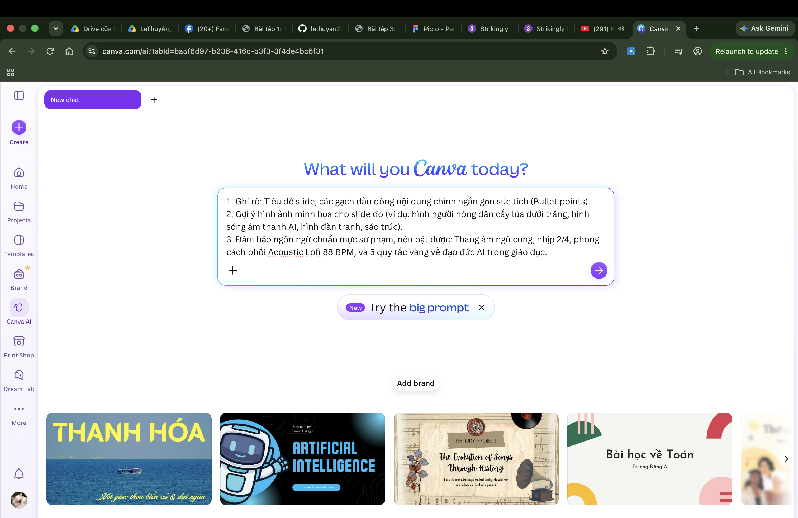
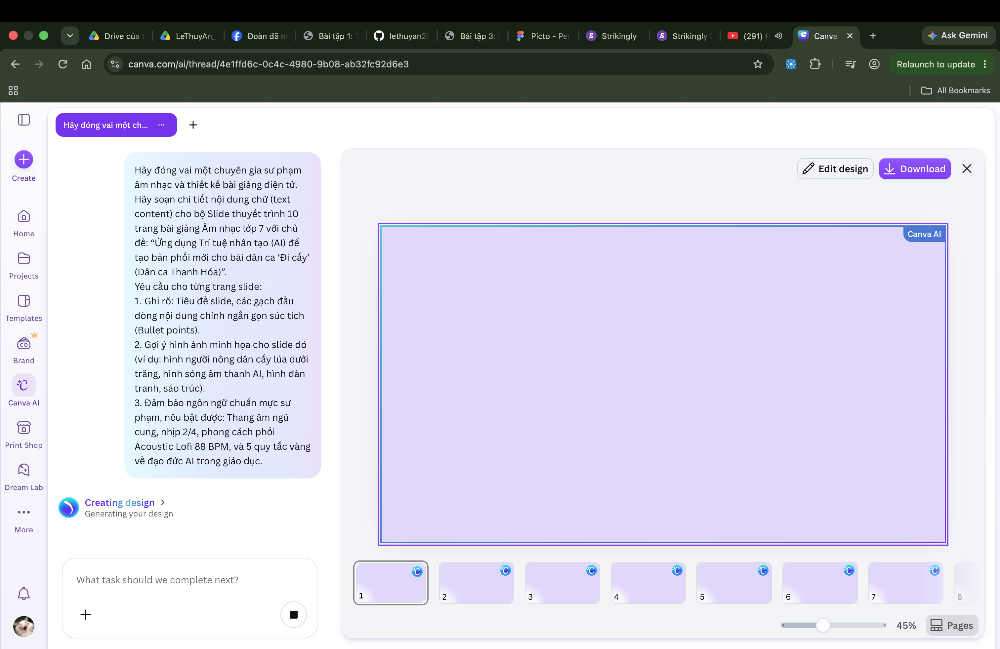

BÀI TẬP 5 (MỤC 5.4): SỬ DỤNG AI TẠO SINH ĐỂ HỖ TRỢ SÁNG TẠO NỘI DUNG
Chủ đề: Thiết kế bộ Slide 10 trang bài giảng Âm nhạc lớp 7 & Học liệu số đa phương tiện bài dân ca "Đi cấy" (Dân ca Thanh Hóa)
🎯 a) Mục tiêu bài tập
Rèn luyện kỹ năng tích hợp các công cụ Trí tuệ nhân tạo tạo sinh (Generative AI: Canva Magic Design, Text-to-Image, AI Sound Arrangement) vào quy trình thiết kế bài giảng điện tử và học liệu số tương tác môn Âm nhạc cấp THCS. Nắm vững kỹ thuật viết Prompt sư phạm để xây dựng trọn bộ Slide 10 trang chuẩn mực, kết hợp hài hòa giữa nhạc lý truyền thống (thang âm ngũ cung, nhịp 2/4) và bản phối Acoustic Lofi 88 BPM, đồng thời lồng ghép giáo dục 5 quy tắc vàng về đạo đức AI trong nhà trường.
⚙️ b) Tóm tắt quá trình thực hiện
1. Kịch bản Prompt thiết kế bài giảng trên Canva (Chuẩn hóa R-T-C-O-F):
Để yêu cầu AI hỗ trợ soạn thảo nội dung bài giảng điện tử không bị lan man hay quá dài dòng trên từng slide, sinh viên đã thiết kế câu lệnh chuẩn mực theo khung R-T-C-O-F:
2. Quy trình thực hiện 4 bước hoàn thiện sản phẩm:
- Bước 1 — Khởi tạo kịch bản 10 slide: Sử dụng Prompt R-T-C-O-F để tạo dàn ý 10 slide sư phạm, phân bổ thời lượng 45 phút tiết học khoa học từ khởi động đến tổng kết.
- Bước 2 — Tạo sinh tư liệu hình ảnh với AI (Image Prompting): Dùng DALL-E 3 / Bing Image Creator vẽ tranh minh họa cánh đồng cấy lúa đêm trăng rằm, hoa sen chùa làng và không gian lớp học âm nhạc hiện đại.
- Bước 3 — Thiết kế mỹ thuật trên Canva Magic Design: Thiết lập tỷ lệ màn chiếu 16:9, áp dụng bộ màu nhận diện thương hiệu giáo dục: Xanh mạ non (#10B981) + Vàng ấm trăng rằm (#F59E0B) + Xanh navy (#0F172A).
- Bước 4 — Tích hợp đa phương tiện & Xuất bản: Nhúng tệp âm thanh bản phối Lofi 88 BPM (thực hiện từ Bài 3) vào trực tiếp slide luyện hát, tạo mã QR liên kết bài tập về nhà.
📦 c) Sản phẩm cuối cùng: Trưng bày học liệu số hoàn thiện
📑 1. Toàn bộ 10 Trang Slide Bài giảng điện tử (Ảnh chụp thực tế từ Canva)
Mỗi slide hiển thị hình ảnh thiết kế thực tế trên Canva, kèm tiêu đề, nội dung chiếu cô đọng và ghi chú sư phạm (Nhấp vào ảnh để xem độ phân giải cao):
💻 2. Minh chứng Quá trình thiết kế trên Không gian làm việc Canva (Canva Workspace)
Ảnh chụp màn hình thực tế tài khoản Canva và không gian làm việc số của sinh viên trong quá trình hoàn thiện bộ giáo án điện tử:


🖼️ 3. Bộ tác phẩm tranh minh họa số hỗ trợ bài giảng (AI Artworks)
Các tác phẩm hình ảnh nghệ thuật tạo sinh từ kỹ thuật Prompting, tái hiện không gian văn hóa đồng quê Việt Nam:
Bức tranh 01: Cấy lúa đêm trăng thanh bình
Tái hiện vẻ đẹp lao động mộc mạc dưới ánh trăng rằm
Bức tranh 02: Hồ sen đình làng & Sáo trúc
Gắn liền với câu hát "Lên chùa bẻ một cành sen"
Bức tranh 03: Lớp học âm nhạc trải nghiệm
Học sinh THCS say sưa hòa ca theo bản phối mới
🛡️ d) Bảng kê khai công cụ AI sử dụng & Mục đích (Liêm chính học thuật)
Thực hiện đúng quy định về liêm chính học thuật của học phần INF2501, sinh viên kê khai chi tiết các công cụ AI được sử dụng làm phương tiện hỗ trợ trong quá trình hoàn thiện Bài tập 5:
| Công cụ AI | Nội dung hỗ trợ | Mục đích sử dụng & Vai trò kiểm soát của sinh viên |
|---|---|---|
| Canva Magic Design | Gợi ý bố cục Slide 16:9 & Bảng màu | Hỗ trợ định hình giao diện trực quan, bảng màu nhận diện. Sinh viên tự biên tập nội dung, chia bullet points và căn chỉnh thẩm mỹ. |
| ChatGPT / Gemini | Kịch bản sư phạm 10 slide & Prompting | Gợi ý cấu trúc hoạt động dạy học 45 phút và viết prompt tiếng Anh. Sinh viên rà soát tính chuẩn xác của kiến thức nhạc lý SGK. |
| Bing Image / DALL-E 3 | Tạo sinh 03 tranh minh họa văn hóa | Tạo chất liệu hình ảnh đồng quê dưới trăng phục vụ thị giác học sinh. Sinh viên tinh chỉnh Prompt để giữ đúng trang phục thuần Việt. |
| Suno AI (từ Bài 3) | Bản phối mới Acoustic Lofi 88 BPM | Cung cấp tệp âm thanh nhúng vào Slide 05. Sinh viên dùng tai nghe và kiến thức ngũ cung để thẩm định và xuất bản. |